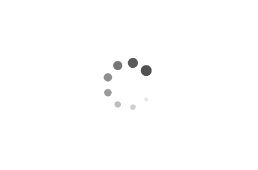

Select
Dedicated Mode if you are installing Rise Player on a Media Player that is connected to the screen you want
to continuously show content on.
Select
Evaluation Mode if you are installing Rise Player on your personal computer PC for evaluation or testing
purposes.
We strongly recommend not using Dedicated Mode on your personal computer. It will disable the screensaver, screen timeouts
and start automatically after reboots. Use Evaluation Mode if you’re not sure. You can switch to Dedicated Mode later.
Start Rise Player
Success!
Rise Player installation has completed.
Tip! Press
CTRL + SHIFT + Q at any time to stop Rise Player once started.
Please note: Rise Player is only supported on managed devices. In order for Rise Player to start automatically after
reboots, your device must be configured to run in kiosk mode. For more information, visit
http://www.risevision.com/riseplayer/ .
Installing Rise Player
Please wait while the installer tests the network.

Rise Player Error
Network Error!
Please check your network connection. Rise Player is unable to connect to the Internet.
Your content will begin playing as soon as network has been restored.
Tip! Press
CTRL + SHIFT + Q at any time to stop Rise Player once started.
Rise Player Error
Network Error!
Rise Player is not able to connect to the URLs below,
and may not be able to show your content properly.
Rise Player is only supported on managed devices. In order for Rise Player to start automatically after reboots your device
must be configured to run in kiosk mode. For more information visit
http://www.risevision.com/riseplayer
Please note: Rise Player is only supported on managed devices. In order for Rise Player to start automatically after
reboots, your device must be configured to run in kiosk mode. For more information, visit
http://www.risevision.com/riseplayer/ .
Please note: Rise Player is only supported on managed devices. In order for Rise Player to start automatically after
reboots, your device must be configured to run in kiosk mode. For more information, visit
http://www.risevision.com/riseplayer/ .